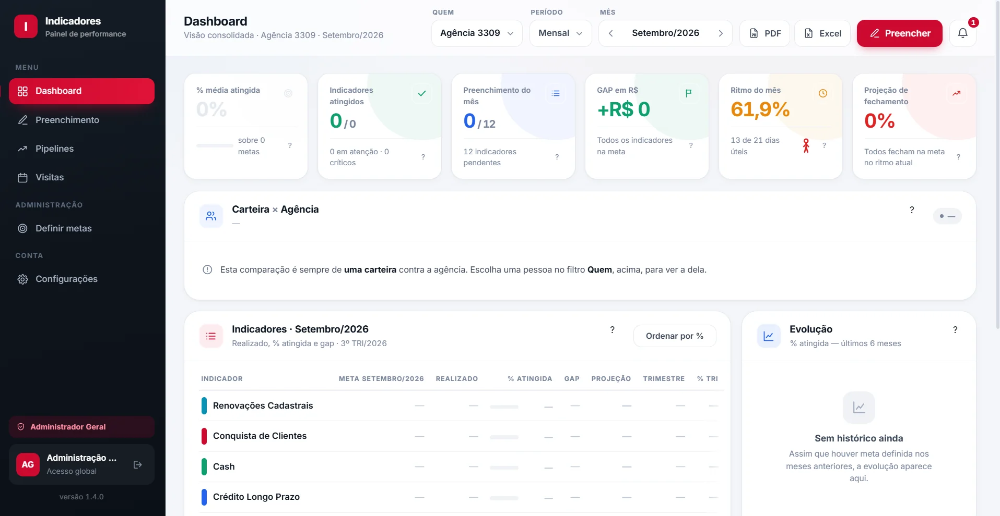

Caso 01 / 05
Caso real · um banco
Um banco precisava enxergar as metas sem depender de planilha.
Cada gestor mantinha a sua versão dos números e o quanto faltava só aparecia no fechamento — quando já não dava tempo de reagir. A gente construiu o painel do zero: a empresa cria os próprios indicadores, define a meta e a ordem.
12indicadores numa tela só
Por dia útilmeta dia a dia, com feriado descontado
Tempo realo gap recalcula a cada lançamento
Na rederoda na máquina da empresa
